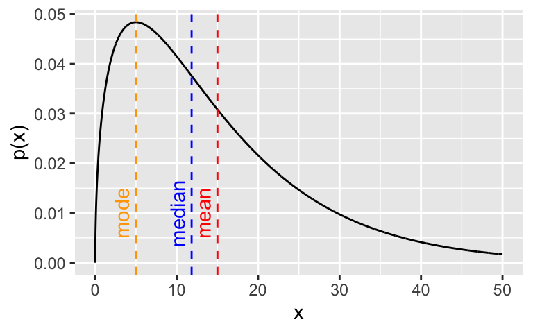
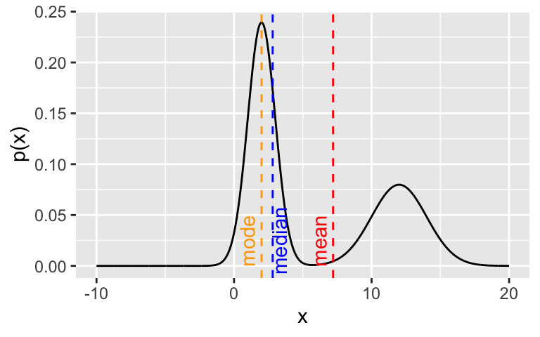
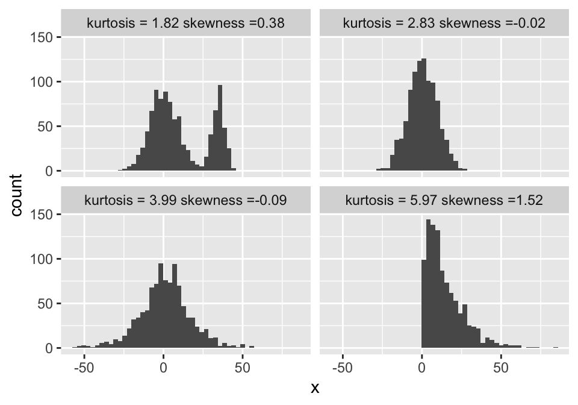
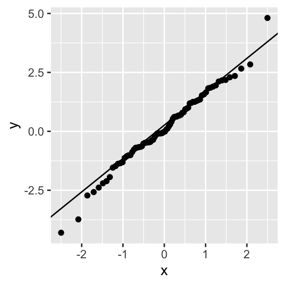
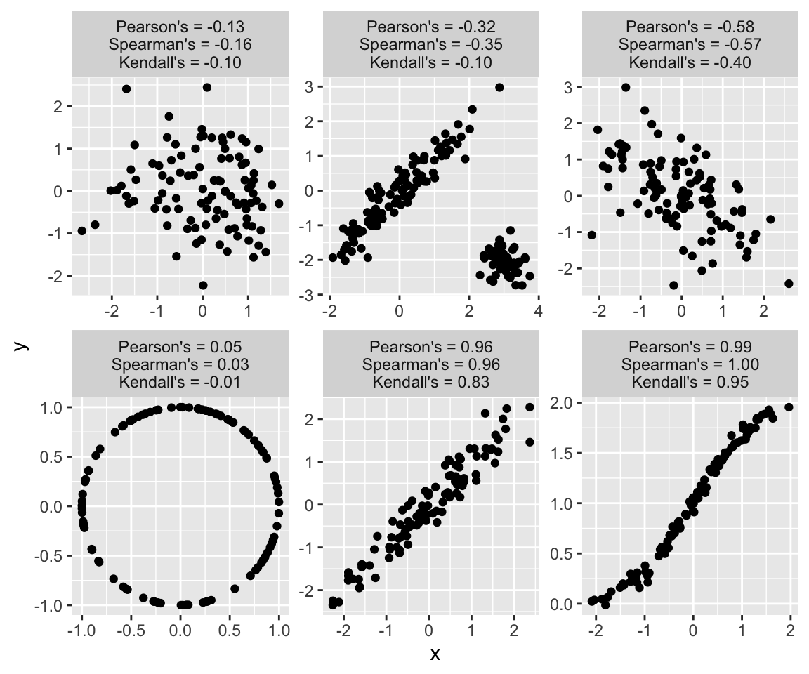

Chapter 5 Summarizing data - the basics
Data summarization is the science and art of conveying information more effectivelly and efficiently. Data summarization is typically numerical, visual or a combination of the two. It is a key skill in data analysis - we use it to provide insights both to others and to ourselves. Data summarization is also an integral part of exploratory data analysis.
In this chapter we focus on the basic techniques for univariate and bivariate data. Visualization and more advanced data summarization techniques will be covered in later chapters.
We will be using R and ggplot2 but the contents of this chapter are meant to be tool-agnostic. Readers should use the programming language and tools that they are most comfortable with. However, do not sacrifice expresiveness or profesionallism for the sake of convenience - if your current toolbox limits you in any way, learn new tools!
5.1 Descriptive statistics for univariate distributions
We humans are not particularly good at thinking in multiple dimensions, so, in practice, there will be a tendency to look at individual variables and dimensions. That is, in practice, we will most of the time be summarizing univariate distributions.
Univariate distributions come from various sources. It might be a theoretical distribution, an empirical distribution of a data sample, a probabilistic opinion from a person, a posterior distribution of a parameter from a Bayesian model, and many others. Descriptive statistics apply to all of these cases in the same way, regardless of the source of the distribution.
Before we proceed with introducing the most commonly used descriptive statistics, we discuss their main purpose. The main purpose of any sort of data summarization technique is to (a) reduce the time and effort of delivering information to the reader in a way that (b) we lose as little relevant information as possible. That is, to compress the information.
All summarization methods do (a) but we must be careful to choose an appropriate method so that we also get (b). Summarizing out relevant information can lead to misleading summaries, as we will illustrate with several examples.
5.1.1 Central tendency
The most common first summary of a distribution is its typical value, also known as the location or central tendency of a distribution.
The most common summaries of the location of a distribution are:
- the mean (the mass centre of the distribution),
- the median or 2nd quartile (the value such that half of the mass is on one and half on the other side),
- the mode (the most probable value or the value with the highest density).
Given a sample of data, the estimate of the mean is the easiest to compute (we compute the average), but the median and mode are more robust to outliers - extreme and possibly unrepresentative values.
In the case of unimodal approximately symmetrical distributions, such as the univariate normal distribution, all these measures of central tendency will be similar and all will be an excellent summary of location. However, if the distribution is asymmetrical (skewed), they will differ. In such cases it is our job to determine what information we want to convey and which summary of central tendency is the most appropriate, if any.
For example, observe the Gamma(1.5, 0.1) distribution and its mean, median and mode:
x <- seq(0, 50, 0.01)
a <- 1.5
b <- 0.1
y <- dgamma(x, a, b)
library(ggplot2)
ggplot(data.frame(x,y), aes(x = x, y = y)) + geom_line() + ylab("p(x)") +
geom_vline(xintercept = (a-1) / b, colour = "orange", lty = "dashed") +
geom_vline(xintercept = a / b, colour = "red", lty = "dashed") +
geom_vline(xintercept = qgamma(0.5, a, b), colour = "blue", lty = "dashed") +
annotate(geom = "text", x = (a-1) / b - 1.7, y = 0.01, colour = "orange", label = "mode", angle = 90) +
annotate(geom = "text", x = a / b - 1.7, y = 0.01, colour = "red", label = "mean", angle = 90) +
annotate(geom = "text", qgamma(0.5, a, b) - 1.7, y = 0.01, colour = "blue", label = "median", angle = 90)
In the case of multi-modal distributions, no single measure of central tendency will adequately summarize the distribution - they will all be misleading. For example, look at this bimodal distribution:
x <- seq(-10, 20, 0.01)
y <- 0.6 * dnorm(x, 2, 1) + 0.4 * dnorm(x, 12, 2)
z <- c(rnorm(600, 2, 1), rnorm(400, 12, 2)) # approximating the median
library(ggplot2)
ggplot(data.frame(x,y), aes(x = x, y = y)) + geom_line() + ylab("p(x)") +
geom_vline(xintercept = 0.6* 2 + 0.4 * 15, colour = "red", lty = "dashed") +
geom_vline(xintercept = 2, colour = "orange", lty = "dashed") +
geom_vline(xintercept = median(z), colour = "blue", lty = "dashed") +
annotate(geom = "text", x = 2 - 1, y = 0.025, colour = "orange", label = "mode", angle = 90) +
annotate(geom = "text", x = 0.6* 2 + 0.4 * 15 - 1, y = 0.025, colour = "red", label = "mean", angle = 90) +
annotate(geom = "text", x = median(z) + 0.5, y = 0.025, colour = "blue", label = "median", angle = 90)
5.1.2 Dispersion
Once location is established, we are typically interested in whether the values of the distribution cluster close to the location or are spread far from the location.
The most common ways of measuring such dispersion (or spread or scale) of a distribution are:
- variance (mean of quadratic distances from mean) or, more commonly, standard deviation (root of variance, so we are on the same scale as the measurement)
- median absolute deviation (median of absolute distances from mean),
- quantile-based intervals, in particular the inter-quartile range (IQR) (interval between the 1st and 3rd quartiles, 50% of the mass/density lies in this interval).
Standard deviation is the most commonly used and median absolute deviation is more robust to outliers.
In the case of distributions that are approximately normal, the mean and standard deviation will be the optimal choice for summarization, because they correspond directly to the two parameters of the normal distribution. That is, they completely summarize the distribution without loss of information. We also know that approximately 95% (99%) of the normal density lies within 2 (3) standard deviations from the mean. Standard deviation is useful even if the distribution is not approximately normal as it does provide some information, combined with the sample size (producing the standard error), on how certain we can be in our estimate of the mean.
But, as before, the more we deviate from normality, the less meaningful standard deviation becomes and it makes more sense to use quantile-based intervals. For example, if we estimate the mean and \(\pm\) 2 standard deviations for samples from the Gamma distribution from before, we get the following:
## 14.66 +/- 24.49That is, the 95% interval estimated this way also includes negative values, which is misleading and absurd - Gamma distributed variables are positive. Computing the IQR or the 95% range interval provides a more sensible summary of this skewed distribution and, together with the mean also serve as an indicator that the distribution is skewed (the mean is not the centre of the intervals):
set.seed(0)
x <- rgamma(1000, a, b)
cat(sprintf("%.2f, IQR = [%.2f, %.2f], 95pct = [%.2f, %.2f]\n", mean(x), quantile(x, 0.25), quantile(x, 0.75), quantile(x, 0.025), quantile(x, 0.975)))## 14.66, IQR = [5.72, 20.76], 95pct = [1.18, 46.09]And, again, for multi-modal distributions, we can adequately summarize them only by identifying the modes visually and/or describing each mode individually.
5.1.3 Skewness and kurtosis
As mentioned above, ranges can be used to indicate a distributions asymmetry (skewness) or fat-tailedness (kurtosis). Although less commonly used, there exist numerical summaries of skewness and kurtosis that can be used instead.
The following example shows the kurtosis and skewness for a gamma, normal, logistic and bimodal distribution. Observe how the standard way of calculating kurtosis fails for the bimodal and assigns it the lowest kurtosis:
library(moments)
set.seed(0)
tmp <- NULL
for (i in 1:4) {
if (i == 1) x <- rgamma(1000, a, b)
if (i == 2) x <- rnorm(1000, 0, 9)
if (i == 3) x <- rlogis(1000, 0, 9)
if (i == 4) x <- c(rnorm(700, 0, 9), rnorm(300, 35, 4))
s <- paste0("kurtosis = ", round(kurtosis(x), 2), " skewness =", round(skewness(x), 2))
tmp <- rbind(tmp, data.frame(x = x, name = s))
}
ggplot(tmp, aes(x = x)) + geom_histogram(bins = 50) + facet_wrap(.~name)
5.1.4 Nominal variables
Nominal variables are typically represented with the relative frequencies or probabilities, numerically or visually. Note that the methods discussed so far in this chapter apply to numerical variables (rational, interval and to some extent, ordinal) but not nominal variables, because the notions of location and distance (dispersion) do not exist in the nominal case. The only exception to this is the mode, which is the level of the nominal variable with the highest relative frequency or probability.
One summary that is often useful for summarizing the dispersion or the uncertainty associated with a nominal variable is entropy. Observe the following example:
## [1] 1## [1] 0.7219281## [1] 0A fair coin has exactly 1 bit of entropy - we receive 1 bit of information by observing the outcome of a flip. This is also the maximum achievable entropy for a binary variable. A biased coin has lower entropy - we receive less information. In the extreme case of a coin with heads on both sides, the entropy is 0 - the outcome of a flip brings no new information, as we already know it will be heads.
When we want to compare entropy across variables with different numbers of levels/categories, we can normalize it by dividing it with the maximum achieavable entropy. For example, observe a fair coin and a fair 6-sided die - in absolute terms, the 6-sided die has higher entropy due to having more possible values. However, relatively to the maximum achievable entropy, both represent maximally uncertain distributions:
## [1] 1## [1] 2.584963Note that entropy can easily be calculated for any discrete random variable. Entropy also has a continuous analogue - differential entropy, which we will not discuss here.
5.1.5 Testing the shape of a distribution
Often we want to check if the distribution that underlies our data has the shape of some hypothesized distribution (for example, the normal distribution) or if two samples come from the same distribution.
Here, we will present two of the most common methods used: the Kolmogorov-Smirnov test and the Chi-squared goodness-of-fit test. Both of these are Null-hypothesis significance tests (NHST), so, before we proceed, be aware of two things. First, do not use NHST blindly, without a good understanding of their properties and how to interpret their results. And second, if you are more comfortable with thinking in terms of probabilities of hypotheses as opposed to significance and p-values, there always exist Bayesian alternatives to NHST.
The Kolmogorov-Smirnov test (KS) is a non-parametric test for testing the equality of two cumulative distribution functions (CDF). These can be two empirical CDFs or an empirical CDF and a theoretical CDF. The KS test statistic is the maximum distance between the two corresponding CDFs. That is, we compute the distribution of this statistic under the null-hypothesis that the CDFs are the same and then observe how extreme the maximum distance is on the sample.
To illustrate the KS test, we use it to test the normality of the underlying distributions for two samples - one from a logistic distribution, one from a standard normal distribution. And then to test if the two samples come from the same distribution:
##
## Exact one-sample Kolmogorov-Smirnov test
##
## data: x1
## D = 0.1575, p-value = 0.03362
## alternative hypothesis: two-sided##
## Exact one-sample Kolmogorov-Smirnov test
##
## data: x2
## D = 0.070067, p-value = 0.801
## alternative hypothesis: two-sided##
## Exact two-sample Kolmogorov-Smirnov test
##
## data: x1 and x2
## D = 0.175, p-value = 0.173
## alternative hypothesis: two-sidedSo, with a 5% confidence level (95% confidence), we would reject the null hypothesis that our sample x1 is from a standard normal distribution. On the other hand, we would not reject that our sample x2 is from a standard normal distribution. Finally, we would not reject the null hypothesis that x1 and x2 come from the same distribution. The only guarantee that comes with these results is that we will in the long run falsely reject a true null-hypothesis at most 5% of the time. It says very little about our overall performance, because we do not know the ratio of cases when the null-hypothesis will be true.
This example also illustrates the complexity of interpreting NHST results or rather all the tempting traps laid out for us - we might be tempted to conclude, based on the high p-value, that x2 does indeed come from a standard normal, but that then leads us to a weird predicament that we are willing to claim that x1 is not standard normal, x2 is standard normal, but we are less sure that x1 and x2 have different underlying distributions.
Note that typical implementations of the KS test assume that the underlying distributions are continuous and ties are therefore impossible. However, the KS test can be generalized to discrete and mixed distributions (see R package KSgeneral).
Differences in between distributions can also be assessed visually, through the QQ-plot, a plot that compares the quantiles of the two distributions. If the distributions have the same shape, their quantiles, plotted together, should lie on a line. The samples from the logistic distribution obviously deviate from the theoretical quantiles of a normal distribution:

The Chi-squared goodness-of-fit (CHISQ) test is a non-parametric test for testing the equality of two categorical distributions. The CHISQ test can also be used on discrete or even continuous data, if there is a reasonable way of binning the data into a finite number of bins. The test statistic is based on a similar idea as the KS test statistic, but instead of observing just the maximum difference, we sum the squared difference between the relative frequency of the two distributions for a bin across all bins.
We illustrate the CHISQ test by testing the samples for a biased coin against a theoretical fair coin and the samples from an unbiased 6-sided die against a theoretical fair 6-sided die.
##
## 0 1
## 20 10chisq.test(x, p = c(0.5, 0.5)) # the default is to compare with uniform theoretical, but we make it explicit here##
## Chi-squared test for given probabilities
##
## data: x
## X-squared = 3.3333, df = 1, p-value = 0.06789##
## 0 1
## 30 10##
## Chi-squared test for given probabilities
##
## data: x
## X-squared = 10, df = 1, p-value = 0.001565##
## 1 2 3 4 5 6
## 7 3 6 7 7 10##
## Chi-squared test for given probabilities
##
## data: x
## X-squared = 3.8, df = 5, p-value = 0.5786So, with a 5% significance level (95% confidence), we would reject the null hypothesis that our coin is fair, but only in the case with 40 samples. Because fair or close-to fair coins have high entropy, we typically require a lot of samples to distinguish between their underlying probabilities. We would not reject the null-hypothesis that the die is fair.
For a more real-world example, let us take the exit-poll data for the 2016 US Presidential election, broken down by gender, taken from here:
n <- 24588
male <- round(0.47 * n * c(0.41, 0.52, 0.07)) # some rounding, but it should not affect results
female <- round(0.53 * n * c(0.54, 0.41, 0.05))
x <- rbind(male, female)
colnames(x) <- c("Clinton", "Trump", "other/no answer")
print(x) # this is also known as a contingency table and the subsequent test as a contingency test## Clinton Trump other/no answer
## male 4738 6009 809
## female 7037 5343 652##
## Pearson's Chi-squared test
##
## data: x
## X-squared = 417.71, df = 2, p-value < 2.2e-16So, at any reasonable confidence level, we would reject the null-hypothesis and conclude that there is a difference in how men and women voted. In fact, we do not even need a test, because the difference is so obvious and the sample size so large. The differences between those who earned less or more than 100k$, however, appear smaller, so a test makes more sense:
n <- 24588
less100 <- round(0.66 * n * c(0.49, 0.45, 0.06)) # some rounding, but it should not affect results
more100 <- round(0.34 * n * c(0.47, 0.47, 0.06))
x <- rbind(less100, more100)
colnames(x) <- c("Clinton", "Trump", "other/no answer")
print(x)## Clinton Trump other/no answer
## less100 7952 7303 974
## more100 3929 3929 502##
## Pearson's Chi-squared test
##
## data: x
## X-squared = 9.3945, df = 2, p-value = 0.00912Still, we can at most typical levels of confidence reject the null-hypothesis and conclude that that there is a pattern here as well.
5.2 Descriptive statistics for bivariate distributions
When dealing with a joint distribution of two variables (that is, paired samples), the first thing we are typically interested in is dependence between the two variables or lack thereof. If two distributions are independent, we can summarize each separately without loss of information. If they are not, then the distributions carry information about eachother. The predictability of one variable from another is another (equivalent) way of looking at dependence of variables.
The most commonly used numerical summary of dependence is the Pearson correlation coefficient or Pearson’s \(\rho\). It summarizes the linear dependence, with \(\rho = 1\) and \(\rho = - 1\) indicating perfect colinearity (increasing or decreasing) and \(\rho = 0\) indicating linear independence. As such, Pearson’s \(\rho\) is directly related (the squared root) to the coefficient of determination \(R^2\), a goodness-of-fit measure for linear models and the proportion of variance in one explained by the other variable. An important consideration is that the statement that linear independence implies independence is not true in general (the converse implication is). One notable exception where this implication is true is the multivariate Normal distribution, where the dependence structure is expressed through linear dependence only.
Two of the most popular alternatives to Pearson’s \(\rho\) are Spearman’s \(\rho\) and Kendalls \(\tau\). The former measures the degree to which one variable can be expressed as monotonic function of the other. The latter measures the proportion of concordant pairs among all possible pairs (pairs (x1,y1) and (x2, y2), where if x1 > x2 then y1 > y2). As such, they can capture non-linear dependence and are more appropriate for data with outliers or data where distance might have no meaning, such as ordinal data. Spearman’s \(\rho\) and Kendall’s \(\tau\) are more robust but do not have as clear an interpretation as Pearson’s \(\rho\). Kendall’s tau is also computationally more expensive.
Below are a few examples of bivariate samples that illustrate the strengths and limitations of the above correlation coefficients:
set.seed(0)
library(MASS)
m <- 100
dat <- NULL
# data 1
sigma <- matrix(c(1, 0, 0, 1), nrow = 2)
x <- mvrnorm(m, mu = c(0, 0), Sigma = sigma )
txt <- sprintf("Pearson's = %.2f\nSpearman's = %.2f\nKendall's = %.2f", cor(x)[1,2], cor(x, method = "spearman")[1,2], cor(x, method = "kendall")[1,2])
dat <- rbind(dat, data.frame(x = x[,1], y = x[,2], example = txt))
# data 2
sigma <- matrix(c(1, -0.5, -0.5, 1), nrow = 2)
x <- mvrnorm(m, mu = c(0, 0), Sigma = sigma )
txt <- sprintf("Pearson's = %.2f\nSpearman's = %.2f\nKendall's = %.2f", cor(x)[1,2], cor(x, method = "spearman")[1,2], cor(x, method = "kendall")[1,2])
dat <- rbind(dat, data.frame(x = x[,1], y = x[,2], example = txt))
# data 3
sigma <- matrix(c(1, 0.95, 0.95, 1), nrow = 2)
x <- mvrnorm(m, mu = c(0, 0), Sigma = sigma )
txt <- sprintf("Pearson's = %.2f\nSpearman's = %.2f\nKendall's = %.2f", cor(x)[1,2], cor(x, method = "spearman")[1,2], cor(x, method = "kendall")[1,2])
dat <- rbind(dat, data.frame(x = x[,1], y = x[,2], example = txt))
# data 4
x <- rnorm(m, 0, 1)
y <- 2 * pnorm(x) + rnorm(m, 0, 0.05)
x <- cbind(x, y)
txt <- sprintf("Pearson's = %.2f\nSpearman's = %.2f\nKendall's = %.2f", cor(x)[1,2], cor(x, method = "spearman")[1,2], cor(x, method = "kendall")[1,2])
dat <- rbind(dat, data.frame(x = x[,1], y = x[,2], example = txt))
# data 5
sigma1 <- matrix(c(1, -0.5, -0.5, 1), nrow = 2)
sigma2 <- matrix(c(0.1, 0, 0, 0.1), nrow = 2)
x <- rbind(mvrnorm(m, mu = c(0, 0), Sigma = sigma ), mvrnorm(50, mu = c(3, -2), Sigma = sigma2 ))
txt <- sprintf("Pearson's = %.2f\nSpearman's = %.2f\nKendall's = %.2f", cor(x)[1,2], cor(x, method = "spearman")[1,2], cor(x, method = "kendall")[1,2])
dat <- rbind(dat, data.frame(x = x[,1], y = x[,2], example = txt))
# data 6
z <- runif(m, 0, 2*pi)
x <- cbind(cos(z), sin(z))
txt <- sprintf("Pearson's = %.2f\nSpearman's = %.2f\nKendall's = %.2f", cor(x)[1,2], cor(x, method = "spearman")[1,2], cor(x, method = "kendall")[1,2])
dat <- rbind(dat, data.frame(x = x[,1], y = x[,2], example = txt))
ggplot(dat, aes(x = x, y = y)) + geom_point() + facet_wrap(.~example, ncol = 3, scales = "free")
Like similar questions about other parameters of interest, the question Is
5.3 Further reading and references
- For a more comprehensive treatment of the most commonly used summarization techniques see: Holcomb, Z. C. (2016). Fundamentals of descriptive statistics. Routledge.
- More on the practice of summarization techniques and hypothesis testing: Bruce, P., & Bruce, A. (2017). Practical statistics for data scientists: 50 essential concepts. ” O’Reilly Media, Inc.”. (Chapters 1 and 3)
5.4 Learning outcomes
Data science students should work towards obtaining the knowledge and the skills that enable them to:
- Reproduce the techniques demonstrated in this chapter using their language/tool of choice.
- Recognize when a type of summary is appropriate and when it is not.
- Apply data summarization techiques to obtain insights from data.
- Once introduced to the bootstrap and other estimation techniques, to be able to combine descriptive statistics with a quantification of uncertainty, such as confidence intervals.
5.5 Practice problems
- Download the Football Manager Players dataset or use a similarly rich dataset with numerical, binary and categorical variables. With Python or R demonstrate the application and interpretation of results for each of the summarization techniques from this chapter.
- Find one or more real-world examples (data sets) where a standard summary of univariate or bivariate data fails. That is, where important information is lost in the summary.